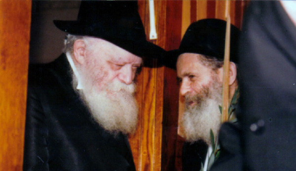

R’ Mottel the Shochet – The Man and the Legend
R’ Boruch Mordechai Lifschitz, as Mordechai in his day, did not bend nor bow to the communists. In Adar seventy-five years ago, he was arrested by the communists, interrogated harshly and exiled for three years. * Even after being released he continued working in various cities as a mohel and shochet. * He recently passed away at the age of 97. * The life of the man of mesirus nefesh known as R’ Mottel der Shochet.

At the end of 5733, only a few Chabad Chassidim were left in Russia since most of them had left the country. Among the few Chassidim who remained was R’ Mottel der Shochet, R’ Boruch Mordechai Lifschitz.
When he wanted to leave Moscow, the Rebbe did not give his consent. Even after his daughter Chaya Sarah married R’ Berel Haskelevich in New York, and he wanted to see the Rebbe and visit the young couple, the Rebbe told him not to leave Moscow even for a short time, “for who would take care of sh’chita in the interim?” The Rebbe wrote to him, “Throughout the city and around it only a very few remain as a shochet and the like, and how can you leave even for a short time? And how could you skip, even for a very short time, not actualizing the great merit you have in being the shochet there?”
***
R’ Mottel Lifschitz who recently passed away in Crown Heights, was a symbol of mesirus nefesh and a model of a Chassid whose life was committed to spreading Judaism and Chassidus in Russia. He was one of the few Chassidim in the world who lived in the Soviet Union throughout the entire seventy years of communist domination. From his youth and until he left Russia after the fall of communism, he worked tirelessly to strengthen Judaism wherever he was. He started in Kiev where he was born and raised, then in the labor camps to which he was exiled, and finally in Moscow where he lived for many years and was one of the pillars of the Jewish community. He did so much even as he knew what could happen if he was arrested by the secret police.
He wrote his memoirs which were published a decade ago in Yiddish and called Zichronos fun Gulag. The following article includes parts of his memoir as well as additional sources, which together portray the life of a man of mesirus nefesh.
THE EARLY DAYS
His memoir begins in Kiev where he was born on 30 Av 5676 to a Chassidishe family. His father was connected to the Chassidim of Chernowitz and his mother to Horonsteipel, but he received a Chabad education. The communist revolution began when he was a baby and learning Torah went underground. Many Jewish schools were closed and the ones that remained open were mainly those belonging to Chabad Chassidim, who were moser nefesh to keep them going. When he learned in these underground yeshivos his soul bonded with Chabad Chassidus.
He continued learning in a branch of Tomchei T’mimim in Kiev that operated secretly. He was not able to sit and learn for long. When he grew older he had to go to work to help support his family. He then joined the Tiferes Bachurim organization run by R’ Binyamin Lipman who served as menahel, maggid shiur, and mashpia.
This organization was founded by the Rebbe Rayatz throughout the Soviet Union for older bachurim and for young married Lubavitcher Chassidim who had to work but wanted to learn in the afternoon and evening. When the authorities tightened the noose around the religiously observant, the organization in Kiev nearly closed down in light of the great fear that prevailed. It was hard to hide dozens of bachurim who were learning. The activities were curtailed, but now and then a few bachurim from Tiferes Bachurim met secretly and learned a maamer or a sicha of the Rebbe Rayatz.
R’ Mottel said that sometimes the bachurim got the keys to the shul, copied them, and went in secretly at night. “There we learned by the light of a candle whose light we also concealed so it would not be seen outside the windows. Nobody could know that Chabad bachurim were learning Torah at this hour in the shul.”
Aside from learning, the bachurim would also meet for farbrengens on special days such as 19 Kislev and 12 Tammuz.
When young Mottel grew older and was of draft age, he sent a letter to the Rebbe Rayatz who was living in Otvotzk, Poland at the time. In his letter he asked for a bracha to be exempt from the army. The answer was identical to that received by many bachurim in that time period. “May Hashem grant that you be a servant of G-d and not, etc.” The meaning was clear, to continue learning and consequently, he would not be a servant of the Russian army.
When he went to the draft office, he presented himself as a religious and believing Jew. This caused the officers to put him through harsh interrogations. The Rebbe’s bracha was soon realized and a few days later he received an official document exempting him from the Russian army. He was thrilled. He did not know that the secret police were keeping tabs on even the smallest details, even a religious bachur who got out of the army because he preferred learning to fighting. When he was arrested, as will be related shortly, he was also interrogated about evading the army draft.
THE BACHUR ASSOCIATED WITH SCHNEERSOHN
Motzaei Shabbos, 21 Adar 5699/1939, Mottel went to his bride-to-be’s house for the purpose of writing t’naim. After this shidduch was suggested to him, he had written to the Rebbe but had not received a reply. The family were Ruzhiner Chassidim and the father of the girl pressured him to make a decision. The man finally said that if t’naim were not written by the next Motzaei Shabbos, the shidduch was off.
Mottel was worried about losing out on this shidduch, especially when in Russia of those days it was hard to find a good, religious girl. He knew that it was possible that the Rebbe’s answer was delayed because answers did not always make it through the “Iron Curtain,” but Mottel yearned to receive a response before he made this fateful decision. With mixed feelings he went to their house, the t’naim were written, and all rejoiced.
When the bachur went home the NKVD were waiting for him and arrested him. The shidduch was canceled.
He wrote the following about his arrest:
“When I was arrested, they conducted a thorough search of my house. As in all Jewish homes, there were many s’farim, Gemaras etc. But I also had many s’farim of Chabad Chassidus like the famous Hemshechim of the Rebbe Rashab from the years 5659, 5666, and 5670, maamarim and sichos of the Rebbe Rayatz, etc. These Chassidic works were hidden.
“When the angels of destruction searched my house, they took no interest in the regular holy books. They searched only for material connected to Chabad and ‘Schneersohn.’ It seems that the informer who tattled on me also told them precisely where the Chabad s’farim were hidden.
“After a brief search they found the treasure and confiscated all the material. Then they told me I had to go along with them. They told me to pack the personal things I needed and to go with them. I took my t’fillin and Siddur, some clothing and a little money. Their car was waiting outside. They put me in the car together with two guards, one on each side, who guarded me as though I was a dangerous criminal. When we got to the prison, the NKVD took whatever I had brought with me. They also took my shoelaces and belt so I would not try to kill myself.”
That night, 21 Adar 5699, a group of distinguished people from the Chassidic community in Kiev was arrested which included: R’ Aryeh Leib Kaplan, rav of the city (the father of R’ Meilich Kaplan, later rav of the Chabad community in Lud), R’ Moshe Kulikov, the Chassidic shochet and mohel in Kiev, R’ Bentzion Geisinsky, the menahel and mashpia of Tiferes Bachurim , R’ Binyamin Lipman, and some talmidim such as R’ Dovid Geisinsky and R’ Yechiel Michel Rappaport.
Those arrested in Kiev underwent hours of interrogation. They realized that they had been under surveillance for a long time and the secret police knew every move they made, big and small, in recent years. Those being interrogated did their best not to incriminate their friends and were exceedingly careful with what they said, but the interrogators knew everything. The details had been provided to them by a young man who was not a Chassid, who had joined Tiferes Bachurim and had, sadly, fallen into the NKVD’s net. He brought down the rest of them.
In his memoirs, R’ Mottel described the harsh interrogations he underwent. The following are some short and painful quotes from his memoirs. In the first interrogation, the interrogator proved that the NKVD knew everything about him:
The interrogator said to me: Last Shabbos you were in shul. On your right sat so-and-so and on your left sat so-and-so, and he mentioned the names of the people who sat next to me in shul.
“So – was it as I said?”
“Yes,” I replied.
“Ah,” he said. “You should know that we don’t arrest anyone just like that. We know who you are. We know you since your childhood. We know everything you are involved with. We know that you are in touch with Schneersohn who lives in Poland and you spread his ideas.
“For a long time we did not want to arrest you, but now we discovered that you are standing on the edge of an abyss and are about to fall in. So we decided to rescue you, to arrest you and get you back on the right path.”
The interrogation continued and Mottel cleverly avoided disclosing information about himself or his friends, but the interrogator did not give up. He realized this was no innocent lamb but a hard nut to crack.
At the conclusion of the first hellish night the interrogator said to me, “Now I will leave you. They will immediately return you to your cell. Think over everything you said. You should know that we know that all the answers you gave are incorrect.” The interrogator pointed at some books on the table and said, “In these books, all is written. Here it says everything you and your friends did over many years. Here it says where you visited each evening, who visited you in your house and what you learned with them. And mainly, all the letters that you wrote to Schneersohn!”
In the subsequent interrogations, the interrogators continued to repeatedly ask about his connection with “Schneersohn.”
“Did your friends enter your house?”
“Yes.”
“What did you learn with them?”
“The Halacha of an ox that gores a cow and her dead fetus was found alongside her (I translated it into Russian for him).”
But that was not what the interrogator was interested in. He said to me, “But you also learned what Schneersohn writes, that it is forbidden to work on the Sabbath, that they should start chadarim where they will poison the minds of young Jewish children, that they should build mikvaos, not to serve in the army, and so on!”
The interrogator continued speaking and I felt a terrible unease in my heart. They saw everything as revolving around “Schneersohn” and this I could not deny, for during the search they conducted in my house, they found all my “Chassidic treasures,” maamarim, sichos and letters of the Rebbe.
FORCED CONFRONTATION
The seasoned interrogators used manipulation, lies and deceit, in the hopes of extracting information in any way possible. One day, they read to him something one of his friends had written after his arrest. Mottel immediately realized that if they were not showing him the handwriting, it was possible it was simply made up.
The next thing that occurred is something he could not possibly have prepared for. One of the distinguished rabbanim of Kiev was placed in the interrogation room for a face to face confrontation:
R’ Aryeh Leib Kaplan was brought into the room. “Look at him,” the interrogator said to me. “Do you recognize him?”
“Yes.”
“Where do you know him from?”
“He comes to daven in shul and I see him there.”
“But he claims that you went with him to collect money for the chadarim and secret yeshivos!”
“That’s a lie! Let him say that here in front of me, that I went with him to collect money for yeshivos!”
The interrogator then asked a devious question. “What? You claim he went alone to collect money?”
Fortunately, I immediately realized what he was up to and I said, “I did not say that. I have no idea what he did.”
The interrogator made a motion with his hand to indicate that R’ Kaplan should be removed from the room. The interrogator did not bring up this topic again. His plan had not worked.
Before Rosh Hashanah 5696 (or 5697), a letter came to Russia for the Chassidim from the Rebbe Rayatz. The Rebbe wrote that since the Chassidim in Russia were not able to be with him on Rosh Hashanah (since he lived in Otvotzk), he asked that each of them send him a picture of himself along with his name and mother’s name.
The Chassidim all had pictures taken of themselves and the pictures were forwarded to Moscow from where they were sent to the Rebbe. A while later, many of the Chassidim, including R’ Mottel, received a letter from the Rebbe which confirmed that he received the picture and in which he conferred brachos.
This story was known to the secret police and R’ Mottel was interrogated about this too:
At one of the interrogations the interrogator took out my picture and asked me, “Do you know this person?” I said, “Yes, it’s a picture of me and I sent a copy to the Rebbe.”
He asked me, “Why did you send him a picture of yourself?”
I told him the real reason, but the interrogator insisted it was for purposes of spying. He banged on the desk and yelled, “Schneersonovitch! We will exterminate you! We will send you to a place from which you will not return!”
I said, “I know that I am in your hands. You can do with me as you like because you fear no one.’”
THE SENTENCE: THREE YEARS IN EXILE
R’ Mottel spent over half a year in the Lukyanovsky prison in Kiev where he was interrogated about Tiferes Bachurim, about “Schneersohn activities” in Kiev, and more. The young bachur did not give an inch. On Pesach he kept kosher to the point of mesirus nefesh. That is not an exaggeration, for on the last two days of Pesach he was so weak he could not walk. Sugar was his main source of energy for the eight days of the holiday.
When the interrogations ended, he was sentenced. Decades later, R’ Mordechai Lifschitz’s file was found in the dusty KGB archives. This is an excerpt from the file and the accusations against him:
On March 10, 1939 (19 Adar 5699), he was arrested as a collaborator in illegal anti-Soviet activity. He studied in an illegal yeshiva.
He founded an underground yeshiva where they learned Torah.
He organized a learning program for youth, Tiferes Bachurim.
He avoided serving in the Red Army.
He raised money to maintain Chassidim and their families.
His sentence was declared on October 17, 1939 (4 Cheshvan 5700): three years of exile in a labor camp.
PESACH AND SHABBOS IN SIBERIA
Mottel was exiled to Siberia where he suffered tremendously. With self-sacrifice and super human effort, he did all he could to keep mitzvos despite the tremendous difficulties. In his memoirs he tells about this in detail. We will quote a little of it:
Pesach (5740, the first in the labor camp) was approaching. At that time, I still managed to observe the Jewish holidays even though I did not possess a Jewish calendar. One day I was called to the camp office where I was informed that my mother had sent me a package. They opened it in my presence and after ascertaining that it contained no forbidden items, they gave it to me. It was a package of matza! I was thrilled.
There were some older Jews with me in the barrack. Before they were arrested they had held important government positions. I decided that I had to share my matza with them Pesach night so they could do the mitzvah too. That night I brought them over to a corner of the hut and told them, “Tonight is Pesach!” At this, they all shuddered.
I opened the package and gave each of them a k’zayis of matza. As they held the matza, they burst into tears. The old ones among them remembered their childhood and how their parents or grandparents celebrated the holiday of Pesach. Each of them began describing what a wonderful holiday it was in their house. This one recalled the tasty kneidlach and that one recalled the Ma Nishtana, and all cried.
The tremendous spiritual arousal that one k’zayis of matza brought about cannot be described in words. Pesach turned into Yom Kippur for them that year. Some of them openly expressed regret for their deeds over the previous decades. Unfortunately, in order to attain these feelings of t’shuva, they had to undergo incredible suffering in the labor camp.
One of the difficult problems in the labor camp was Shabbos observance. I frequently tried to evade working with the excuse that I was sick, but this was no simple matter. There was a doctor in the camp and if he examined you and declared you were healthy, no excuses would help.
I remember one Shabbos when I got up in the morning determined not to desecrate the day. It was Shabbos Kodesh and I refused to go to work. The commander in charge of the prisoners entered the barrack and asked me: Why aren’t you going to work? I said: I am sick. He said: You are sick? Come to the doctor.
He took me to the doctor who said I was healthy and fit to work. So, asked the commander in charge of prisoners, now will you go to work? I said no, and returned to the barrack.
The next day, when I got ready to leave for work, they told me that since I had not worked on Shabbos, I was sentenced to ten days in solitary confinement. You might think that sitting in solitary confinement was a good thing since it absolved you of hard labor. The problem was that someone sentenced to solitary confinement did not receive the usual food ration since he wasn’t working. Just once a day he received a small piece of bread, a small piece of herring, and a little bit of warm water. In addition, the solitary cell had holes through which the Siberian cold came through. After a short time, the prisoner began to yell that he was cold. Then they took him out to warm himself up at the oven and then he was put back in solitary. I was sentenced to suffer like this for ten days!
However, after a few days, the door was opened and I was asked to come out. They brought me to a room where there was a committee of doctors. After I was examined, one of the doctors announced, “He is fit, he is healthy.” Fit for what? I did not know. In the meantime, I was sent back to solitary.
***
A few days later he was taken with a group of other prisoners and put on a train that was heading to a notorious camp, Kolima, which was located in eastern Siberia. The terrible cold and the tough attitude of the jailers there resulted in a high death rate among the prisoners and R’ Mottel had to fight a constant battle for his very existence.
FREEDOM IN STAGES
In Adar 1942, the three year sentence came to an end, but it was World War II and Russian law stated that even prisoners who completed their sentence could not be released to go home. After much effort, R’ Mottel managed to get transferred to work in a forsaken town. He was paid for his work but he was not allowed to leave.
He remained there until the end of the war and at the beginning of 5706 he was completely free to go. He went to Kiev in order to search for relatives but found out that all his relatives and many of his friends had been murdered by the Nazis at Babi Yar, may Hashem avenge their deaths.
He heard that many Chassidim were flocking to Lvov in an attempt to leave Russia with forged documents. He also went to Lvov, in order to join them, but was unable to get out. He remained in Lvov and married Henya Chana Zeide.
In the years that followed he led a hard life. He moved to Chernowitz and Charkov where he learned sh’chita. Then he settled in Moscow where he learned mila. He then served as shochet and mohel in Frunze (today Bishkek, Kyrgyzstan). After some time he moved to Charkov and then Sverdlovsk.
In 5727 he settled in Moscow where he lived for over twenty-five years.
WHO IS MIGHTY?
While living in Moscow, he secretly performed sh’chita and mila. In addition, he worked hard to strengthen Judaism in Moscow and other cities. He knew of the great danger hovering over him in light of the brissin he performed in private homes and without guests, and yet he continued his holy work for many years. He related:
I was so wary of being under surveillance that even though the minhag is that when a mohel is in shul on the day he performs a bris, Tachanun is not said, I made sure that Tachanun was said so that the KGB agents who were always in shul, would not suspect anything. I fulfilled the verse, “it is a time to do for G-d, they abolish Your Torah.”
He did not only perform brissin in Moscow. In Moscow there was a Chassid by the name of R’ Chaim Abramov. He would occasionally buy a pair of tickets to the Ukraine and would go with R’ Mottel to perform brissin there.
Yuli Edelstein, today the Speaker of the Knesset, was very close to R’ Mottel in those days. He has told of their relationship at Chabad events. This is one illustrative story:
“R’ Mottel was a shochet and mohel and had other roles as well. The children of today think that a hero is someone who fights evil and always wins. To me, a hero is something else entirely.
“I will never forget how one time we were invited to a bris mila in a relatively large apartment in the center of Moscow. Everyone waited for the mohel, R’ Mottel, to come and perform the bris. Suddenly, we heard powerful banging at the door. A policeman stood there and said they had received a report from neighbors about the noise we were making and was asked to check what was going on in the apartment. Obviously, they had prior information about our gathering. We said that we were celebrating a birthday, but they asked for the ID’s of those present. Whoever did not present an ID was immediately written down by the policeman.
“He left forty-five minutes later. We breathed a sigh of relief but were sure that no bris would take place. After all, they were waiting downstairs and they arrested every person who wanted to come into the apartment.
“As we deliberated about what to do, R’ Mottel suddenly appeared, looking white. On his way to the apartment he saw a policeman enter the building. He rushed to hide nearby and waited until the policeman left. When the policeman left the area, he hurried upstairs and performed the bris.
“What did we have here? Someone who knew that he was going to commit a crime. He was not a doctor or a nurse, and according to the law was not allowed to perform a bris. What would you expect from a normal person in Soviet Russia who sees a police car? That he would leave the area immediately. But R’ Mottel sat and waited and waited until they left and then went right upstairs. That is a different sort of heroism. He knew that there was no one else who would perform the bris, certainly not someone nearby, and he realized that it was up to him, only him.”
SPECIAL KIRUVIM FROM THE REBBE
In 5747, when Russia began to open somewhat, R’ Mottel began preparing to travel to the Rebbe. He remembered the Rebbe’s answer about not leaving the place without a shochet and he arranged for a replacement. He began teaching sh’chita to R’ Moshe Tamarin. He went to the Rebbe for Tishrei 5748 and merited many kiruvim.
On the first day of Rosh Hashanah he was honored with an aliya to the Torah in the Rebbe’s minyan and stood next to the Rebbe during the t’kios. At the farbrengen on Shabbos Shuva, the Rebbe gave him a piece of lekach.
Erev Sukkos, when the senior Anash and those who won the raffle went to Gan Eden HaTachton (the hallway outside the Rebbe’s room) to receive Dalet minim from the Rebbe, R’ Mottel was also invited. He received an esrog, lulav and a bundle of eighteen hadasim! These kiruvim thrilled him and he immediately said to the Rebbe, “May Hashem help so that you have nachas from the Chassidim!” The Rebbe responded, “And nachas from me” (i.e. that the Chassidim should have nachas from the Rebbe). R’ Mottel said, “Nachas from you? When you are healthy, that is the greatest nachas of the Chassidim.”
Before returning to Moscow, he waited near Gan Eden HaTachton and the Rebbe passed by when the davening was over and gave him a bottle of mashke and told him to go to the secretariat where he would be given $36. R’ Mottel asked the Rebbe, “Since I am returning to Moscow, they will surely ask me what the Rebbe said. What should I answer them?” The Rebbe replied, “Moshiach is on his way and we need to prepare for his coming.”
Communist oppression dwindled and many people made aliya. The communist government revisited the files of ideological prisoners and most of them were “exonerated,” i.e. their offenses were deleted with the understanding that they acted with political or ideological motivations which differed from that of the government. On 20 Adar II 5749, R’ Mottel was also “exonerated” of all guilt.
In Shvat 5753, his second wife, Chaya Sarah, passed away. He was elderly and the fact that he was a widower was reason for him to leave Russia. He knew he could not remain there alone in Moscow. He informed the local community that he wanted to leave. Within a short time they found a replacement, a young man to serve as shochet and mohel. After his replacement arrived, he wrote to the Rebbe that he wanted to leave to be with his children and grandchildren in New York and the Rebbe gave his consent.
In Adar 5753 he settled in Crown Heights and in the years to come he wrote his memoirs.
Two decades passed and a few weeks ago, as he walked to shul he collapsed. He passed away on 4 Adar II at the age of 97 leaving a son and daughters: R’ Zalman (Monsey), Sarah Haskelevich, and Sheindel Wiener (Far Rockaway).
Rabbi Boruch Merkur. "R’ Mottel the Shochet – The Man and the Legend." Beis Moshiach, no. 922 (April 3, 2014).